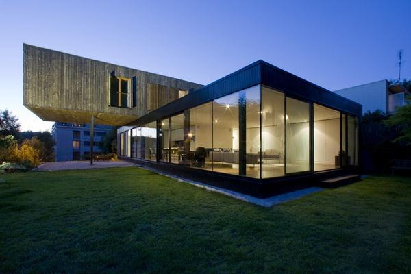

Cracker Home Plans
A Cracker house was a wooden shelter constructed by early Florida and Georgia settlers. It was built on stone crawlspace pilings for ventilation, featured a deep front porch for shade and often had a metal roof and simple symmetrical shape with windows for cross ventilation. Floor cracks "helped with house cleaning, and raised first floor was used to shelter hounds (hunting) and chickens (food), which in turn provided service of consuming fleas and other pests," according to a Florida extension publication on energy efficiency.
Features
Deep front porch
Crawlspace
Metal roof